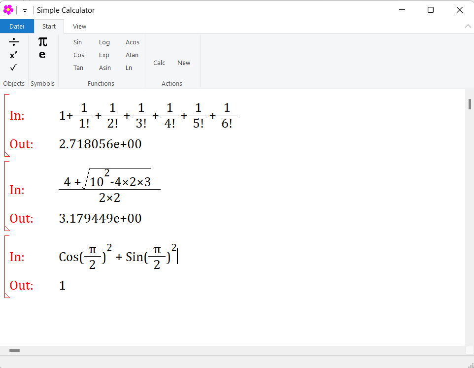

About
The calculator takes mathematical formula as input. The input will be analysed and the result will be showed as output. It has mathematical formula editor. For now we support numerical calculation including Pi and Euler.
Features
- Written in C Programming language and used WIN32 API. (So small and compact executable file)
Application main window

Operator Precedence
The following table lists the precedence and associativity of operators. Operators are listed from the top to bottom, in descending precedence.
| Precedence | Operator | Description | Associativity |
|---|---|---|---|
| 1 | () | Parentheses | Left-to-right |
| 2 | ^ _ | Power, Subscript | right-to-Left |
| 3 | ! | Factorial | Left-to-right |
| 4 | + - | Unary plus and minus | Left-to-right |
| 5 | * / | Multiplication and division | Left-to-right |
| 6 | + - | Addition and subtraction | Left-to-right |
Functions
| Literal | Description |
|---|---|
| Sin | sine |
| Cos | cosine |
| Tan | tangent |
| Asin | arc sine |
| Acos | arc cosine |
| Atan | arc tangent |
| Sqrt | square root |
| Log | common logarithm (base-10 logarithm) |
| Ln | natural logarithm (base-e logarithm) |
| Exp | e raised to the xth power |
Keys
| Key | Description |
|---|---|
| Left and right Arrow | Cursor navigation |
| Backspace | delete current item or delete character |
| ^ | Create exponent item |
| / | Create fraction item |
| : | Create root item |
| F1 | Documents |